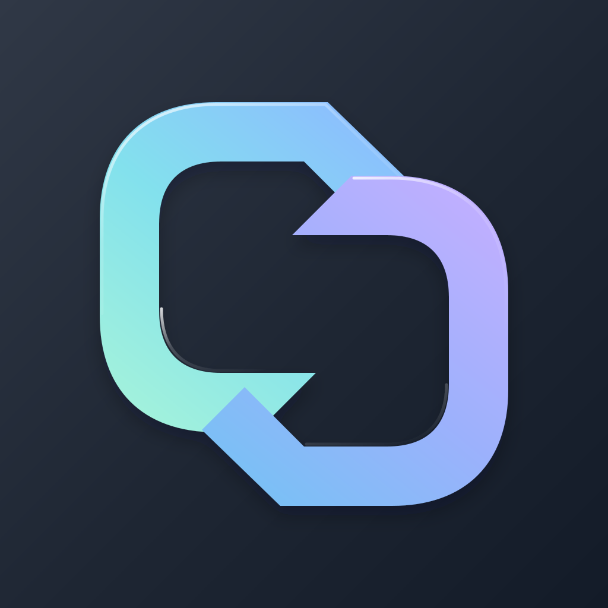
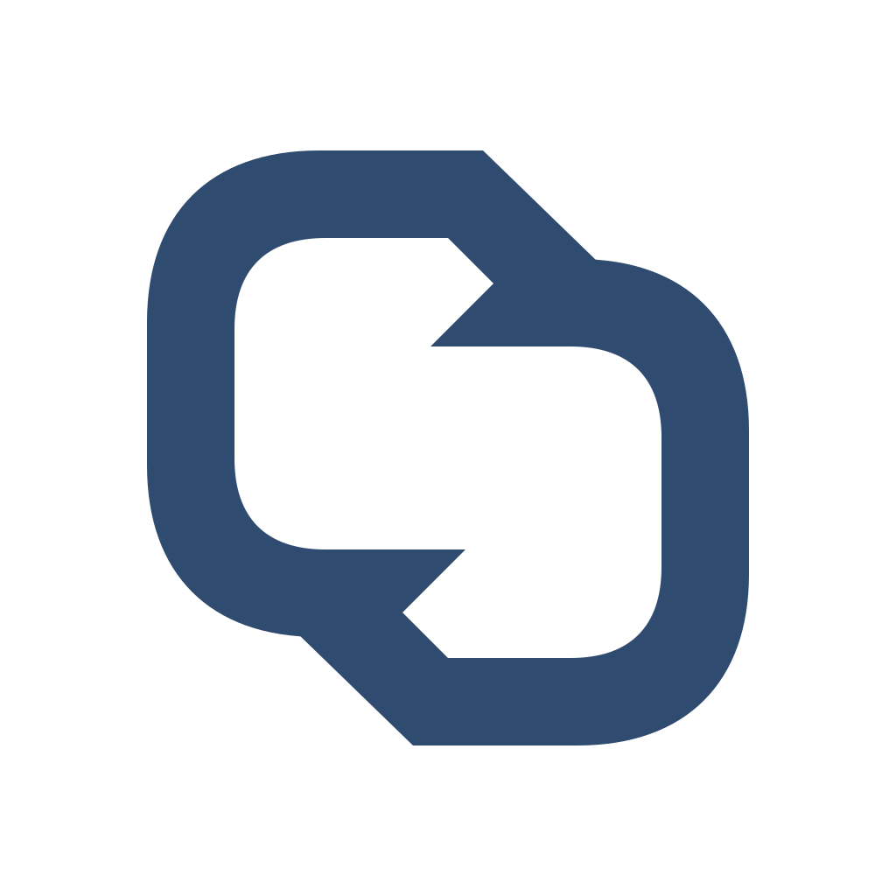
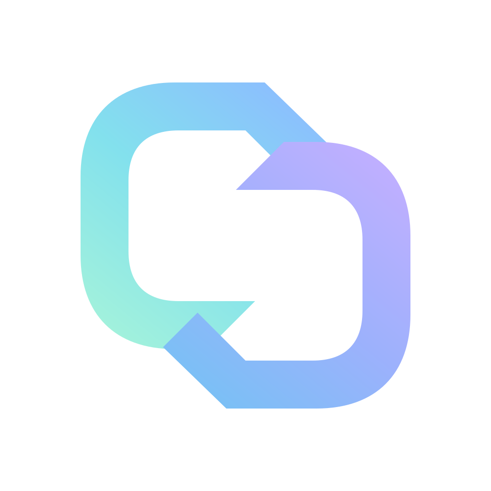

LINKSHELL / IDENTITY STUDY04 — FOLDED LINK

连接，成为形状。
折环
两条开放的折带，组成一枚相扣的壳。
用开口与转折表达连接，让留白成为标识的一部分。
圆润轮廓 / 蓝青微光 / 单一主形

01 / 浅色背景 · 无底板
02 / 深色背景 · 无底板SVG 原稿 · App 圆角仅为展示遮罩 · 当前为主标提案打开矢量原稿 ↗

两条开放的折带，组成一枚相扣的壳。
用开口与转折表达连接，让留白成为标识的一部分。

01 / 浅色背景 · 无底板
02 / 深色背景 · 无底板